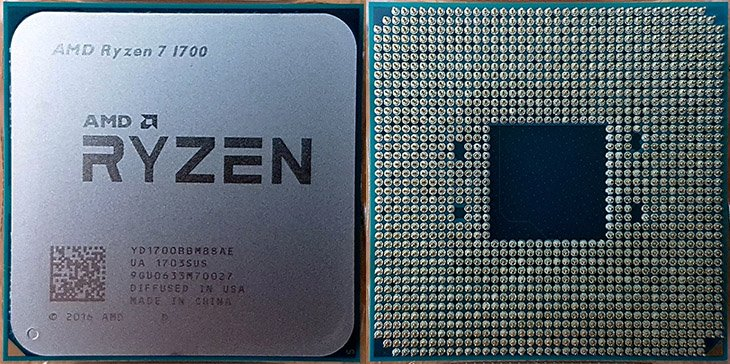
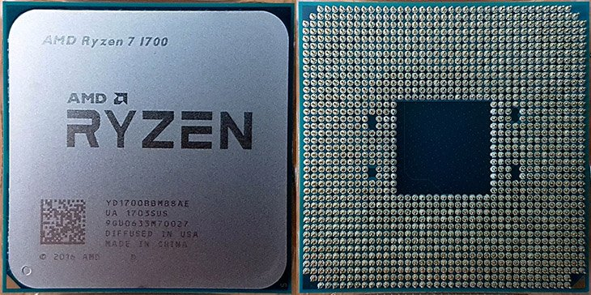

Stands for "Central Processing Unit". The CPU is the primary component of a computer that processes instructions. Because of its massive computing power, it is often called the brains of a computer.
The images below are examples of computer processing units (CPUs).
 

Gray and green Intel Core i3 processor, Intel Core i7 Central processing unit Intel Core i5, CPU Processor transparent background PNG clipart. https://www.hiclipart.com/free-transparent-background-png-clipart-iyeex
26 March 2017. https://www.relaxedtech.com/reviews/amd/ryzen-7-1700/1
To learn more about computer processing units (CPUs) on our site, check out the links below!
| General Information | History and Development | Present CPUs |
|---|---|---|
| In the General Information section, we talk about basic information about CPUs such as functionality, the category it belongs to, and how it works. | In the History and Development section, we talk about the history and development of the CPU that brought it to its current state, as well as the historic facts of the CPU. | In the Present CPUs section, we talk about the types of equipment now available and differences between them in terms of aspects, such as pros, cons, use, and price. |
| Created by: Alvin | Created by: Esson | Created by: Mohsen |